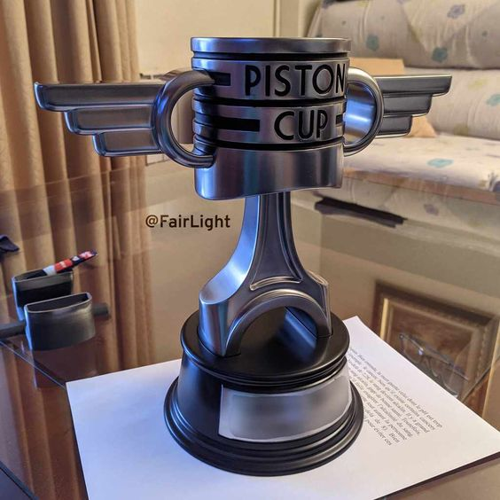

Piston cup finally got a winner!!
All the people underrated Mark, he has always been an underdog among the racers. Poor family
background and poor
cars in childhood did not offer him much scope, but he surely had the raw passion for speed and the
strong
determination to prove himself.
A small Texas town, Mark spent his childhood in his father's garage,
learning
the intricacies of engines and how to make the most of limited resources. He wasn't the flashiest or
the loudest
of racers; he had something much more important-some inexorable drive to win, whatever the odds.Over the
years, Mark broke his way into professional racing, slowly passing the dark horses around him as
others
underestimated him and underappreciated the potential he possessed. Many people-both other competitors and
fans-alike did not think he had what it took to make it to the top, but Mark took that doubt and used it for
fuel. He worked twice as hard, staying late at the garage, studying the tracks, and perfecting his skills.
His
big break came when a small sponsor believed in him and gave him a chance in bigger races. With a modest car
and
team, Mark started stealing the show from drivers who had arrangements way superior to him. Every race stood
testimony to his grit, but till that time he was missing that one moment which would place him on the map.
That moment came in this year's Piston Cup. With the best from around the world contending for the
prestigious
title, the competition was very fierce. Going into the competition as the underdog, Mark knew he was the
last
person anyone would expect to take the day, but he kept his focus. The final race was intense, with Mark
keeping
pace with the lead pack but not quite standing out-until the final lap. But with everything on the line,
Mark
saw an opening on the track that nobody else had the guts to try. He punched the gas, dodged opponents, and
then
gave a heart-stopping final surge across the finish line just inches ahead of the favorite.
The crowd literally went speechless. Mark Johnson, the man nobody had ever taken seriously, was about to win
the
Piston Cup. His victory was one of endurance, not speed. Standing on the podium, holding the trophy, the
world
finally seemed to realize what Mark had known all along: that sometimes it is those who are underestimated
that
rise the highest. This was his moment, and he had earned it through each race, each long night, and with
each
ounce of effort he put into his craft.